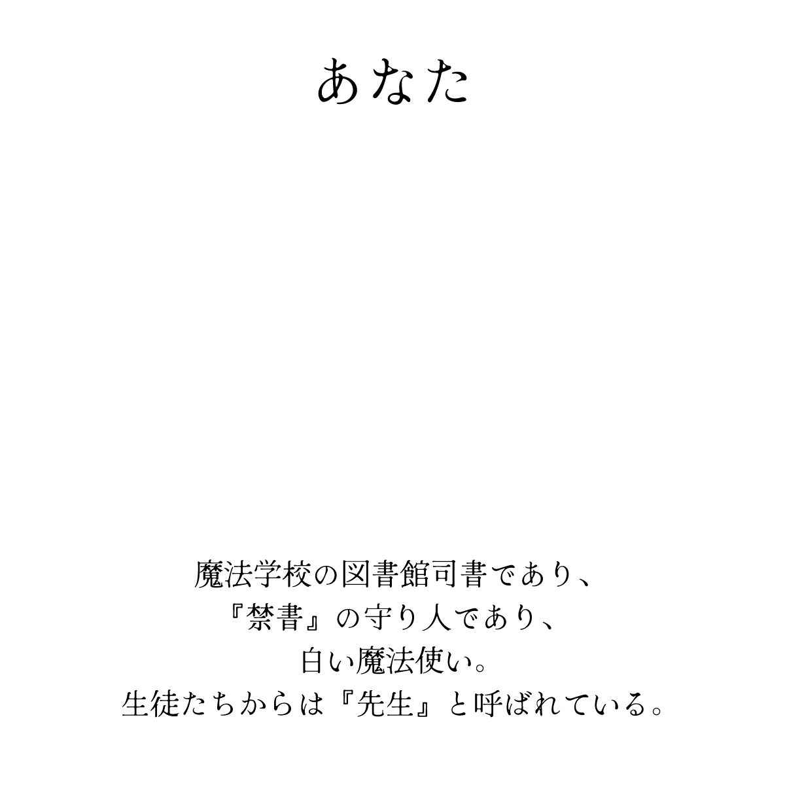

.*･ﾟ .ﾟ･*.
ゆこれはむかし、あなたが図書館司書となり、白い魔法使いになる前の話。
あなたが魔法学校の生徒だった時の記憶の話をしよう。
優秀な魔法使いを両親に持つあなたは、両親と周りからの期待を背に魔法学校へ入学した。きっとあの子も両親のように優秀な魔法使いとして成長し、卒業を迎えるのだ。そう言われて育ったのだろう。
ただ、現実はうまくいかない。
両親の血が流れていようと、関係なかった。
あなたの成績はすこぶる悪い。
魔法はうまく使えない、勉強もできない。
「……くそっ」
ましてや、あなたを相手にしてくれるような友人もいなかった。
そして、入学早々、あなたはとてつもない劣等感に襲われてしまう。
それでも、自分のセンスと両親からの血筋を信じてやまないあなたは、死に物狂いで魔法の習得に挑んだ。が、努力は実を結んでくれない。
そんなあなたを飽きずに毎日のように嘲笑いに来ていたのが、前任の図書館司書だった。
「優秀な魔法使いを両親に持つお前が、その有様かよ」
「お前さあ、魔法使い向いてないんじゃない…？」
「なあーーー、俺が魔法教えてやろうかーー？」
どこで練習をしても、どこで勉強をしようと彼は現れた。
そんなに気に入らないのならば視界に入れなければいいのに。
そもそも、教師でもない図書館司書がなんでわざわざ…
ーーーーーーーーーーーーーーーーーーーーーーーーーーーーーーー
ある、月がきれいな夜だった。
あなたは図書館の裏で、いつものように魔法の練習をしていた。
そして、当然彼も現れる。
今日は一体何を言いに来たのだろうか。
「うわ、今日も懲りずにやってんのかよ…なぁーーー？あきらめの悪いお前に面白いこと教えてやるよ。この話はなあ、ほんの一握りの魔法使いと、魔法学校の校長と、その学校の図書館司書しか知らない話なんだよ。実はなぁ………この学校の図書館には禁書と呼ばれる本があるんだ。その禁書はなぁ…」
「……禁書？」
あなたはふと思い出す。
あなたが小さいころ、深夜に両親が仲間と集まって話をしているところをこっそりのぞいたことがあったことを。
父は仲間にこう話していた。
『魔法学校の図書館には、禁書と言われる本が置かれている。そいつは、開くだけで魔法が飛躍的に上達すると言われている』
これだ。
これしかない。
自分の劣等感を拭ってくれるのは、周りの人間に認めてもらうためには、この本しかない。
あなたは魔法の杖を握りしめて、一気に駆け出した。
「……おい！！！待てよ！！！！まだ話は…！！」
ーーーーーーーーーーーーーーーーーーーーーーーーーーーーーーーーーー
図書館へつながる廊下を走りながらあなたは思う。
禁書について思い出すことはできたが、一体、禁書は図書館のどこに置かれているのか。
それこそ、両親や彼の話を最後まで聞くべきだったかもしれない。
真夜中の図書館をあなたは走り回る。
こんな時でも、自分の魔法能力のなさを痛感してしまう。
ここで明かりをつける魔法が使えたらどれほどよかっただろうか…
簡単な魔法すら使えないあなたを助けてくれるのは、月明かりだけだった。
探索魔法が使えたら…整頓魔法が使えれば…
いくら探しても禁書は見当たらない。出てくるのはもし、もしのたらればばかり。
「……はぁ…はぁ…おい！！お前待てよ！！まさか、禁書を探してるわけじゃないだろうな！？…ばかか！そんな簡単に見つかるようなところに…はぁ…はぁ…置いてるわけねえだろうが！！！！」
彼の言う通りだ。
でも、それでも、禁書をあきらめることなどできなかった。
あの本さえあれば。あの本を読めば…！
そんなあなたの希望に答えるように白銀のもやは現れた。
さらさらとした液体のような、触れたら消える霧のような、ふしぎなもやが足元へまとわりついている。そしてそれは、図書室の一角へ糸のように繋がって、続いている。
まさか….…！！
あなたはその糸を手繰るように、追いかけた。
「…待てよ！！！どこいくんだって！！」
ーーーーーーーーーーーーーーーーーーーーーーーーーーーーーーーーーーーーーーー
図書館の一室。
自習室として活用していた部屋からは、あのもやと同じ白銀の光が漏れ出ている。
「…んだよ……これ…！」
あなたは迷わず扉を開けた。
机の上には白銀の光をまとった一冊の本が置かれている。
重厚感のある表紙に、二本のベルトで硬く縛られた分厚い本だ。今までに、図書館でこんな厳重に管理された本を見たことがない。
これだ。この本だ。
禁書の見た目については全く知らないが、一目見てこの本だとわかった。
この光り輝く本があの、禁書と呼ばれた本なのだ。
とはいえ、背後が静かだ。
追いかけてきて、簡単に禁書が見つかるわけがないと騒いでいた彼の声がしない。
振り返ってみると、部屋の入り口で彼は意識を失ったように眠っていた。
これも、禁書の力なのだろうか。
よくわからないが、だれも止める人はいなくなった。
これで、禁書を開くことができる。
本にかけられたベルトをひとつ、ふたつとほどいてゆく
.*･ﾟ .ﾟ･*.